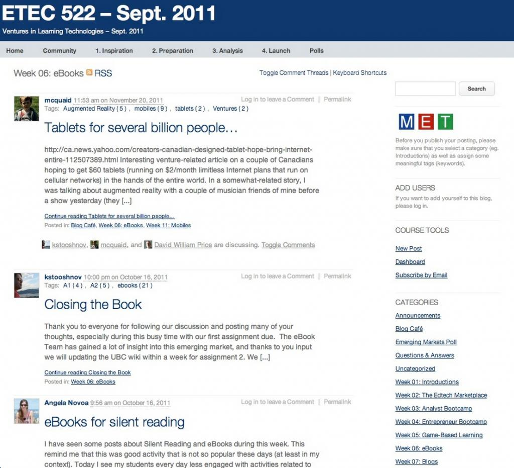

12.9 Passo Sete: Desenhar a estrutura e as atividades letivas

Imagem: © Arisean Reach, 2012

A relevância de prover os estudantes com uma estrutura letiva consistente e a definição de atividades adequadas constituem os pilares de um ensino de qualidade, representando variáveis frequentemente secundarizadas nos manuais clássicos de garantia de qualidade.
12.9.1 Considerações gerais sobre a estrutura do ensino
Apresenta-se uma definição prévia, dado que este tema raramente é abordado de forma direta no ensino presencial ou digital, embora a estrutura pedagógica represente um fator com impacto directo no aproveitamento letivo. O dicionário define estrutura como:
1. Disposição das partes de um todo organizado.
2. Modo como os elementos de um conjunto se relacionam ou articulam.
3. A inter-relação das partes numa entidade complexa.
A estrutura letiva engloba duas dimensões interligadas:
- a seleção, segmentação e sequenciamento dos conteúdos curriculares;
- a organização sistemática das atividades dos estudantes sob a orientação do docente (desenvolvimento de competências e avaliação).
Num modelo letivo de estrutura forte, os estudantes identificam com clareza o que necessitam de estudar, as tarefas letivas a realizar e os prazos e locais associados. Num modelo de estrutura fraca ou flexível, a atividade dos alunos apresenta-se aberta e com menor controle direto pelo professor (embora o estudante possa impor uma estrutura individual rigorosa ao seu próprio percurso). A escolha da estrutura pedagógica produz implicações na carga de trabalho de docentes e alunos.
Sob a perspectiva conceitual, uma estrutura letiva de pendor forte não apresenta necessariamente maior eficácia do que uma estrutura flexível, nem se associa de forma exclusiva ao presencial ou ao digital. A opção metodológica dependerá do contexto. Contudo, selecionar a estrutura pedagógica adequada é crítico, e embora as estruturas do ensino digital partilhem traços comuns com o presencial, noutras dimensões registram-se diferenças significativas.
Identificam-se três condicionantes para a estrutura letiva:
(a) os requisitos organizacionais e administrativos da instituição;
(b) a filosofia de ensino preferencial do docente;
(c) o diagnóstico docente sobre o perfil de necessidades dos estudantes.
12.9.2 Requisitos organizacionais do ensino presencial
Embora os requisitos organizacionais do ensino no campus nos pareçam tão familiares que passam despercebidos, estas variáveis constituem determinantes na estruturação da docência, condicionando a atividade de docentes e a vida acadêmica dos estudantes. Listam-se alguns dos requisitos que moldam a estrutura presencial no ensino superior:
- a duração letiva em anos obrigatória para a obtenção do diploma;
- os trâmites de homologação e revisão curricular dos cursos;
- o volume de créditos exigido para a graduação;
- a correlação normativa entre créditos e tempo de presença física em sala;
- a duração do semestre letivo e a sua relação com a carga horária de créditos;
- os rácios docentes/estudantes recomendados;
- a disponibilidade física de salas de aula e espaços laboratoriais;
- o cronograma e local de realização das avaliações e exames.
Verificam-se outros requisitos equivalentes no ensino básico, tais como a duração do dia escolar e os períodos de férias letivas. Com o crescimento em escala das instituições de ensino superior, estes trâmites administrativos consolidaram-se. Este alinhamento organizacional apresenta-se necessário para fins de regulação, acreditação, financiamento público, transferências de crédito e acesso a pós-graduações. Deste modo, vigoram razões estruturais para a manutenção destas condicionantes organizacionais no modelo presencial.
Assim, o docente depara-se com limitações operacionais severas. O currículo deve ser moldado segundo as unidades temporais disponíveis (semestres, créditos e tempos de contato da disciplina). O planejamento letivo deve contemplar a dimensão da turma e a disponibilidade de espaços físicos, com a obrigação de presença de professores e alunos em locais específicos (salas de aula, laboratórios) em horários definidos.
Deste modo, a despeito do conceito de liberdade acadêmica, a estrutura do ensino presencial apresenta-se predeterminada por variáveis administrativas. Sem debater a adequação destas limitações operacionais às necessidades dos estudantes digitais, cumpre identificar quais destas condicionantes se aplicam ao on-line e quais se revelam flexíveis, dado que esta distinção condiciona o desenho das atividades letivas.
12.9.3 Requisitos organizacionais do ensino on-line
O desafio inicial do ensino digital residiu na sua validação pedagógica face ao ceticismo do setor sobre a sua qualidade e eficácia. Consequentemente, os projetos on-line procuraram reproduzir as metas e a estrutura do ensino presencial de modo a evidenciar a equivalência de resultados entre ambas as modalidades (confirmada pela investigação científica).
Esta postura implicou adotar as mesmas premissas de semestres, disciplinas e créditos do presencial. Contudo, em 1971, a Open University britânica optou por uma estrutura de graduação equivalente em tempo total de estudo ao campus convencional, mas com organização curricular diferenciada (ex.: disciplinas de crédito integral com 32 semanas de estudo e meio crédito com 16 semanas), viabilizando abordagens interdisciplinares de base. A Western Governors' University (focada na aprendizagem por competências) e a faculdade Empire State (assente em contratos de aprendizagem com adultos) constituem outros exemplos de desvio aos padrões organizacionais clássicos.
Caso os cursos on-line visem a equivalência de certificação face ao presencial, tenderão a adotar parâmetros idênticos de duração de curso (ex.: quatro anos para bacharelado), créditos exigidos e, consequentemente, carga horária de estudo equivalente. A divergência situa-se na mensuração do "tempo de contato", associado formalmente às horas de docência presencial (ex.: uma disciplina semestral de 3 créditos e 13 semanas equivale a 3 horas semanais de sala de aula).
A mensuração baseada em "horas de contato" apresenta limitações, constituindo contudo o parâmetro padrão do presencial. O estudo superior exige tempo de dedicação autónomo dos alunos: estima-se que, para cada hora de aula presencial, os estudantes dediquem no mínimo duas horas a leituras e trabalhos práticos. O tempo de contato varia conforme as áreas científicas, registando-se cargas horárias superiores nas engenharias e ciências biológicas (com componente laboratorial expressiva) face às ciências humanas. Adicionalmente, as horas de contato avaliam inputs letivos e não os resultados desenvolvidos.
Nos modelos híbridos e mistos, a relevância do conceito de horas de contato dilui-se. Os estudantes podem frequentar apenas uma hora presencial por semana e realizar o restante estudo no on-line, ou concentrar 15 horas em laboratório numa semana letiva com ausência de contatos presenciais no período complementar.
O princípio regulador deve assentar em assegurar que os cursos on-line ou híbridos cumpram padrões científicos e pedagógicos equivalentes aos presenciais, exigindo tempo de dedicação equivalente por parte dos estudantes, embora a sua distribuição temporal apresente flexibilidade conforme a modalidade adotada.
12.9.4 Qual a carga horária de estudo de uma disciplina on-line?
Antes de definir o desenho instrucional de uma disciplina híbrida ou on-line, cumpre estimar a carga horária de estudo recomendada para os estudantes, a qual deve ser equivalente à exigida a um aluno presencial a tempo integral.
Estima-se que uma disciplina de graduação de três créditos exija cerca de 8 a 9 horas de estudo semanais, totalizando aproximadamente 100 horas ao longo de 13 semanas (um estudante em regime de tempo integral com matrícula em cinco disciplinas de 3 créditos por semestre dedicaria cerca de 40 a 45 horas semanais de estudo). O docente detém a competência para definir esta carga horária segundo as especificidades da sua área científica. O relevante reside em mapear uma meta horária de referência para o estudante médio, clarificando desde o início do curso o tempo de estudo semanal exigido.
Pelo fato de o volume de conteúdos disponíveis superar a disponibilidade horária de estudo dos alunos, recomenda-se selecionar os conceitos científicos estruturais da disciplina, reservando tempo letivo para tarefas de pesquisa autônoma, trabalhos práticos e projetos. Os docentes, pela sua especialização científica, tendem a subestimar o tempo necessário para o estudante consolidar um tema, revelando-se aqui útil o suporte do designer instrucional no diagnóstico da carga de trabalho dos alunos.
12.9.5 Estrutura forte ou flexível?
Outra decisão pedagógica prende-se com o nível de estruturação a conferir à disciplina, o qual dependerá da filosofia de docência e do perfil de necessidades dos estudantes.
Caso o docente considere indispensável delimitar os conceitos a cobrir e o sequenciamento letivo associado (ou responda a diretrizes de acreditação externa rígidas), optará por um design de estrutura forte, definindo temas e prazos específicos associados a tarefas de estudo obrigatórias.
Em contrapartida, caso entenda que cabe ao estudante gerir o seu percurso e cronograma de estudos (salvaguardando as metas de avaliação finais), priorizará um design de estrutura flexível ou loose structure.
O perfil de estudantes deve orientar esta escolha. Alunos desprovidos de competências de estudo autônomo exigem o suporte de uma estrutura forte de orientação letiva nas etapas iniciais. Estudantes de nível avançado (graduação tardia ou pós-graduação) com competências de autogestão consolidadas adaptam-se com facilidade a estruturas flexíveis. A dimensão da turma constitui outra variável: em turmas numerosas, a estrutura forte e padronizada apresenta-se necessária para a gestão da carga horária de trabalho do docente, dado que modelos flexíveis exigem dinâmicas de apoio individualizado exigentes.
Manifesto preferência por designs de estrutura forte no ensino on-line, definindo metas e prazos com clareza mesmo na pós-graduação. Na pós-graduação, alargo a flexibilidade de escolha de temas e os prazos para projetos complexos, preservando a clareza nos resultados de aprendizagem exigidos e nas datas de entrega das avaliações para gerir de forma equilibrada a minha carga de trabalho.
A disciplina de pós-graduação ETEC 522 da Universidade da Colúmbia Britânica adota um design de estrutura flexível no qual os estudantes organizam as suas tarefas em torno dos temas letivos. Pelo fato de a disciplina incidir sobre tecnologias emergentes de rápida transformação, a sua estrutura é atualizada anualmente, constituindo um exemplo de design ágil.



A interface ilustrada na Figura 12.9.2 (edição de 2011) evidencia uma estrutura flexível: a weekly topic structure (tópicos semanais) situa-se na coluna direita, abrangendo sete semanas, reservando-se as seis semanas complementares para o desenvolvimento de projetos pelos alunos. O corpo central reúne as publicações das atividades produzidas pelos próprios estudantes nos seus blogs. Registra-se a opção de utilizar o WordPress (sistema de gestão de conteúdos) em substituição do LMS convencional, plataforma que facilita a publicação e organização autónoma de materiais pelos estudantes.
O ensino híbrido oferece oportunidades para capacitar os estudantes na gestão do seu estudo no âmbito de uma estrutura segura assente em momentos presenciais regulares, nos quais apresentam trabalhos individuais ou de grupo. Esta abordagem deve ser pensada sob uma perspectiva de curso integrada: no primeiro ano do bacharelado prioriza-se a presencialidade convencional; introduz-se de forma progressiva o ensino híbrido no segundo e terceiro anos; e disponibilizam-se disciplinas totalmente on-line no quarto ano, preparando os estudantes para a formação contínua ao longo da vida.
12.9.6 Transição de disciplinas presenciais para o on-line
Esta transição apresenta simplicidade no que se refere ao sequenciamento de conteúdos, dado que o cronograma das aulas teóricas tradicionais define as unidades semanais de estudo. O desafio pedagógico incidirá na estruturação de atividades letivas adequadas no ambiente digital. Os LMS encontram-se desenhados para suportar o sequenciamento em blocos semanais alinhados com os temas presenciais, facultando uma linha temporal clara para os alunos, modelo igualmente aplicável a metodologias baseadas na resolução de problemas.
Torna-se necessário, contudo, adaptar os conteúdos ao ambiente digital. Apresentações de PowerPoint simples podem não refletir a totalidade das exposições orais da sala de aula. Justifica-se redesenhar os materiais para assegurar a autonomia de estudo on-line (recorrendo ao apoio de designers instrucionais). Cumpre certificar que a carga de trabalho de leituras e atividades digitais planejada para o período letivo não ultrapasse as metas semanais de referência. O docente poderá ter de redefinir determinados recursos como "opcionais". Contudo, materiais de estudo opcionais que não integrem as avaliações tendem a ser secundarizados pelos estudantes. Este diagnóstico de carga horária letiva revela, com frequência, redundâncias de trabalho inclusive no modelo presencial de base.
Mantenha a consciência de que o estudante on-line realiza o estudo sob padrões de menor linearidade temporal face ao modelo presencial clássico. Ausente a disciplina física da sala de aula presencial, os estudantes demandam clareza sobre as metas semanais e prazos associados. Apresenta-se prioritário mitigar dinâmicas de procrastinação no on-line, causa frequente de insucesso e abandono acadêmico.
A definição de atividades letivas constitui fator crítico de aproveitamento no digital, exigindo o equilíbrio contínuo entre carga de conteúdos e tarefas letivas de modo a viabilizar a gestão do tempo pelo estudante.
12.9.7 Estruturar uma disciplina híbrida (Blended Learning)
Muitas disciplinas híbridas desenvolvem-se de forma assistemática: adicionam-se recursos digitais no LMS (textos e notas de aula) ao modelo presencial convencional de base. Esta prática encerra riscos caso a componente presencial não seja reajustada em consonância. Com o tempo, acumulam-se materiais, tarefas e leituras complementares no ambiente virtual, resultando em sobrecarga horária de trabalho para docentes e alunos.
O desenho de disciplinas híbridas exige atenção à estrutura letiva e à carga de trabalho dos estudantes. Means et al. (2010) apontaram que os resultados favoráveis do híbrido decorrem da dedicação de maior tempo de estudo útil às tarefas (time on task). Este aproveitamento é positivo, contudo os estudantes serão sobrecarregados caso a totalidade das disciplinas adote este modelo de acréscimo sem reajuste. Na transição para o híbrido, a carga de tarefas on-line deve ser compensada pela redução de tempos presenciais em sala.
12.9.8 Desenhar uma disciplina on-line de raiz
Caso planeje um curso sem correspondência com programas presenciais no campus (ex.: pós-graduação aplicada direcionada a profissionais integrados no mercado), dispõe de maior flexibilidade para conceber uma estrutura orientada para o digital e adaptada ao perfil de necessidades deste público.
A distribuição da carga horária de estudo prescinde dos limites físicos da sala de aula clássica. A disciplina on-line apresenta-se completa e acessível aos estudantes antes do início do período letivo oficial. Os alunos podem realizar as tarefas sob ritmos individuais diferenciados. A aprendizagem baseada em competências permite a progressão dos estudantes em velocidades distintas. Algumas universidades abertas adotam modelos de matrícula contínua com datas de início e conclusão flexíveis. Sendo a maioria dos estudantes digitais profissionais no ativo, justifica-se alargar a duração letiva formal dos cursos face aos equivalentes presenciais a tempo integral (ex.: estender a duração de um mestrado profissional on-line para até cinco anos).
12.9.9 Princípios fundamentais no design de estrutura de um curso
A adoção de modelos de autoaprendizagem com cronogramas individuais flexíveis pode ser desaconselhada por critérios pedagógicos. Pessoalmente, evito a flexibilidade total de prazos de entrega em pós-graduações pelo fato de priorizar dinâmicas colaborativas e fóruns de debate coletivos. A progressão do grupo em ritmos homogêneos viabiliza discussões aprofundadas, apresentando complexidade organizar dinâmicas colaborativas com estudantes em etapas letivas diferenciadas. Contudo, em disciplinas científicas específicas (ex.: matemática), modelos de autoaprendizagem com progressão individual flexível revelam-se eficazes.
Independentemente do modelo adotado, dois princípios estruturais mantêm relevância:
- definição da carga horária de estudo semanal recomendada para a disciplina;
- clareza nas tarefas letivas semanais exigidas dos estudantes e nos respectivos prazos.
12.9.10 Desenhar as atividades letivas dos estudantes
Esta dimensão assume importância crítica no on-line, no qual os estudantes carecem da convivência física do campus e de dinâmicas espontâneas de debate em sala. A proposição de tarefas letivas regulares mantém o estudante ativo no curso, aspeto extensível ao presencial. Estas atividades compreendem:
- leituras dirigidas com tarefas de sistematização que comprovem a compreensão dos textos;
- testes de autoavaliação curtos de escolha múltipla com feedback automatizado integrado no LMS;
- questões de resposta curta de autoria individual partilhadas para comparação e debate entre os alunos;
- tarefas periódicas de avaliação formal (ensaios curtos, relatórios técnicos);
- desenvolvimento de projetos individuais ou em equipe ao longo do período letivo;
- manutenção de blogs ou portfólios eletrônicos individuais com reflexões críticas sobre o estudo, acessíveis para acompanhamento pelo docente;
- fóruns de debate on-line organizados e mediados pelo docente.
Mapeia-se uma diversidade de tarefas letivas para fomentar a participação ativa dos alunos. Estas atividades devem apresentar alinhamento explícito com os resultados de aprendizagem da disciplina, auxiliando os estudantes na preparação para as avaliações formais. Caso as metas do curso foquem em competências práticas, as atividades devem prover oportunidades de treino dessas competências.
As atividades devem observar distribuição cronológica equilibrada no calendário, estimando o tempo de dedicação necessário para a sua realização. O acompanhamento da participação dos estudantes nestas tarefas é da responsabilidade do docente (analisado no Passo 8).
Nesta fase, o design instrucional exige decisões sobre o equilíbrio entre a transmissão de conteúdos e a realização de atividades práticas. O estudante necessita de tempo útil para a realização de tarefas semanais ativas, sob risco de insucesso e abandono letivo. A estrutura das atividades deve conciliar a carga horária de estudo dos alunos com a capacidade de gestão de trabalho do docente no feedback das tarefas.
Sob a minha perspectiva pessoal, as disciplinas no ensino superior apresentam-se sobrecarregadas de conteúdos expositivos, com escassez de atividades orientadas para a interpretação, análise e aplicação dos saberes. Adoto como referência metodológica a premissa de que o estudante deve dedicar no máximo metade do tempo de estudo ao consumo de conteúdos teóricos (leituras e aulas expositivas), reservando o período complementar para a realização das atividades práticas descritas. À medida que o aluno consolida competências de estudo autônomo, alarga-se a flexibilidade, assumindo o estudante a responsabilidade pela pesquisa científica sob orientação e critérios do professor. Independentemente da filosofia letiva adotada, a proposição de atividades regulares com feedback oportuno apresenta-se indispensável no ensino on-line.
12.9.11 Diversidade de estruturas, equivalência de exigência acadêmica
Identificam-se modelos alternativos para assegurar a estrutura do ensino on-line. A título de exemplo, a Open Learning Initiative da Carnegie Mellon disponibiliza cursos completos pré-estruturados para disciplinas propedêuticas do ensino superior, integrando no LMS conteúdos, objetivos letivos, atividades de autoaprendizagem e manuais de estudo. O papel do docente foca na tutoria, mediação e classificação das avaliações. Estas propostas registram taxas de aproveitamento e conclusão satisfatórias.
A disciplina de história do Cenário D manteve a estrutura presencial de três aulas teóricas semanais nas primeiras três semanas, migrou para tarefas on-line colaborativas em pequenos grupos em torno de um projeto durante cinco semanas e regressou à sala nas cinco semanas finais em sessões semanais de três horas para a apresentação e discussão plenária dos projetos.
Analisamos que no ensino por competências os estudantes progridem sob ritmos individuais em cursos de estrutura sequencial forte, registando-se flexibilidade no tempo dedicado pelo aluno para atingir a proficiência exigida.
O Integrated Science Program da Universidade McMaster estrutura-se em torno de projetos científicos desenvolvidos por estudantes de graduação ao longo de períodos de 6 a 10 semanas.
Os cMOOCs, como o projeto #Change 11 (Milligan, 2012) de Stephen Downes, George Siemens e Dave Cormier, adotam estruturas flexíveis com temas semanais sob a responsabilidade de diferentes especialistas, cabendo aos estudantes organizar de forma autônoma as suas atividades (publicações em blogs ou comentários). Trata-se de cursos que não conferem créditos formais, nos quais a conclusão integral da proposta não constitui meta prioritária do aluno. Por sua vez, os xMOOCs de Stanford e do MIT apresentam estrutura rígida com atividades de feedback automatizado integrado, registrando taxas de conclusão inferiores a 10% em cursos igualmente desprovidos de créditos formais. Verifica-se a tendência contemporânea de redução da duração letiva dos MOOCs para períodos de três a quatro semanas.
O ensino digital liberta a prática letiva das restrições clássicas de anfiteatros e semestres, permitindo desenhar disciplinas sob estruturas adequadas às metas pedagógicas e ao perfil de estudantes. No ensino formal conducente a graus acadêmicos, o meu objetivo assenta em conciliar a exigência científica com o aproveitamento letivo dos estudantes. Esta meta exige a estruturação pedagógica e o desenho de atividades de aprendizagem adequadas como pilares de qualidade do curso.
Referências
Means, B. et al. (2010) Evaluation of Evidence-Based Practices in Online Learning: A Meta-Analysis and Review of Online Learning Studies Washington, DC: US Department of Education
Milligan, C. (2012) Change 11 SRL-MOOC study: initial findings Learning in the Workplace, December 19
Atividade 12.9 Estruturando a sua disciplina ou programa
- Quantas horas semanais de estudo deve um estudante médio dedicar a uma disciplina de três créditos? Caso a sua resposta divirja da sugerida nesta seção (8 a 9 horas), apresente as suas razões.
- Se desenhasse uma graduação on-line de raiz, consideraria obrigatório adotar a estrutura semestral de 13 semanas com disciplinas de 3 créditos? Caso negativo, que modelo organizacional proporia e com que justificativa?
- Avalia que as disciplinas no ensino superior se encontram sobrecarregadas de conteúdos teóricos, com escassez de atividades de aprendizagem ativa? Dedica-se atenção excessiva à transmissão de informações em detrimento do desenvolvimento de competências cognitivas e práticas? De que modo esta realidade condiciona a estrutura e a qualidade das disciplinas?
Esta atividade destina-se a fins de reflexão individual, não contando com feedback associado.